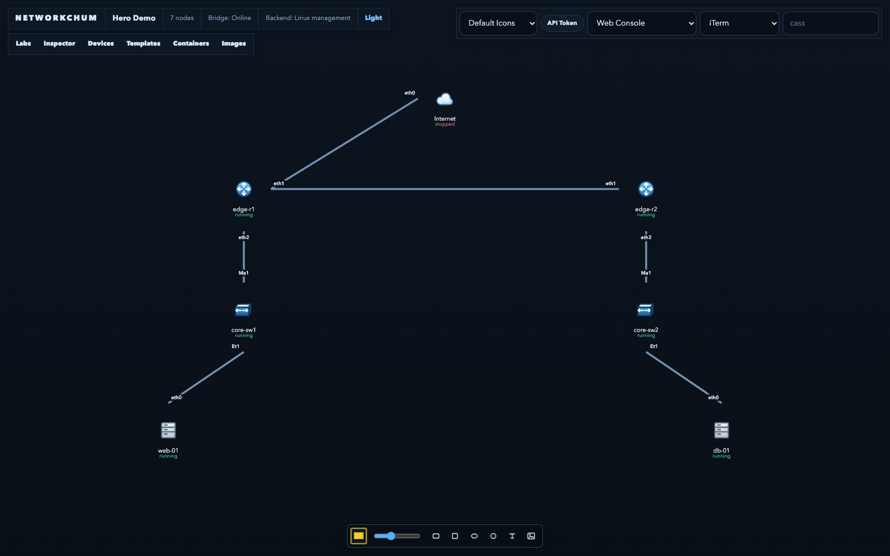
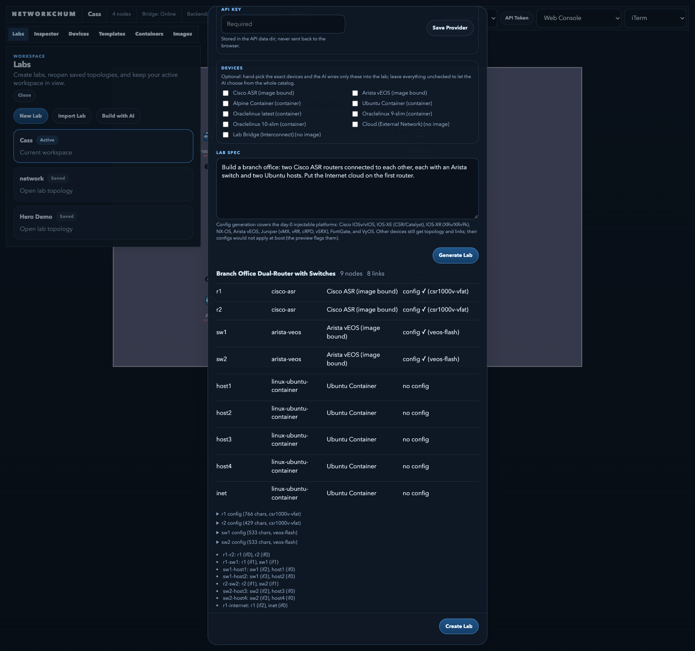
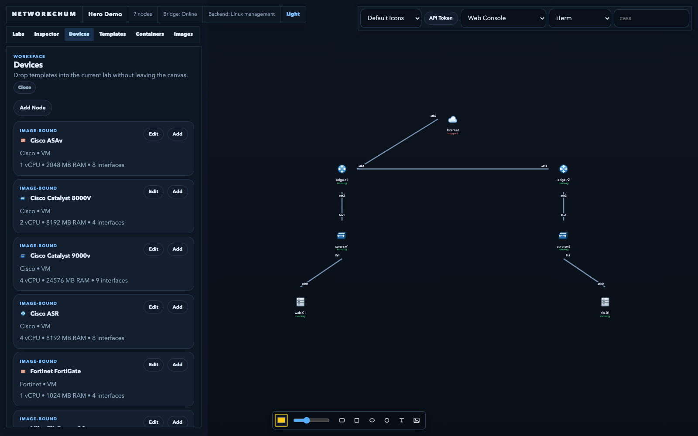
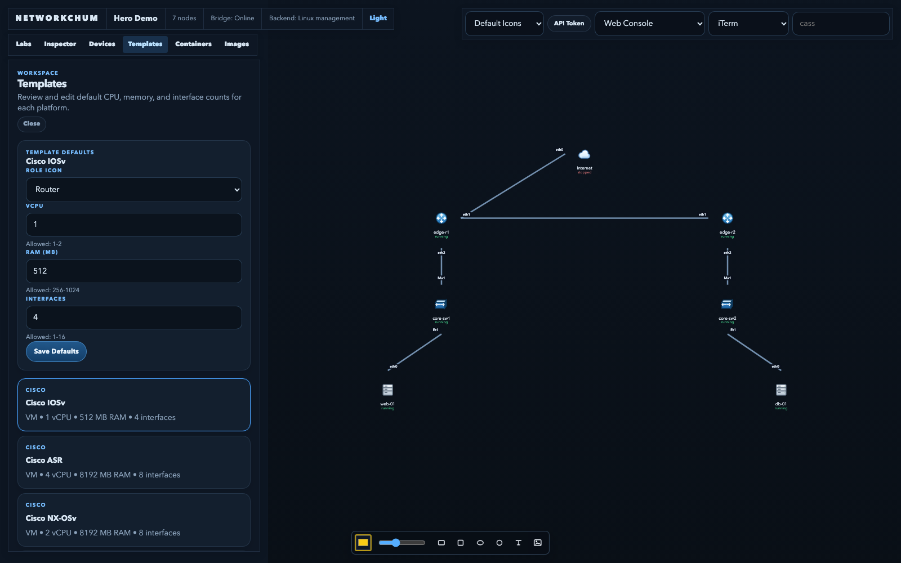
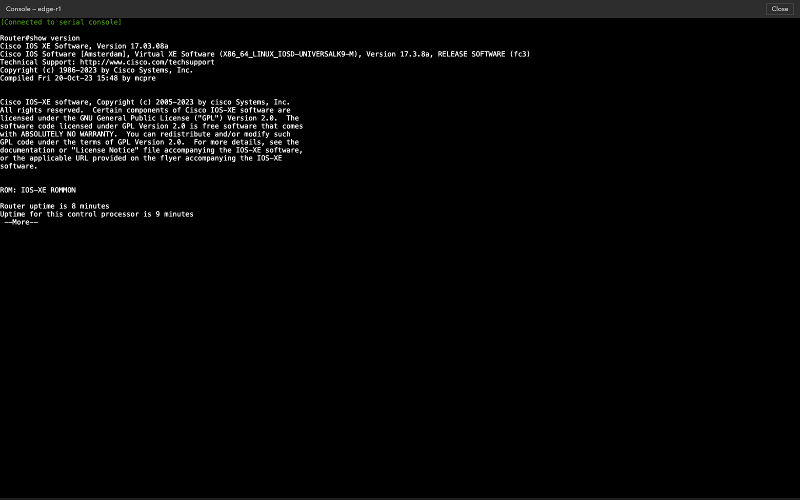

NetworkChum is a browser-based lab workbench for routers, switches, firewalls and hosts. Drag out a topology, wire it up, console into every device, and keep the whole lab as a JSON document you can back up, share, or regenerate.
Installer support for apt, dnf, pacman and zypper — Debian, Ubuntu, Fedora, the RHEL family, Arch and openSUSE. EVE-NG and PNETLab are tied to Ubuntu.
Every feature ships in the open-source build. Cable two already-running devices and traffic flows immediately — no restart, no Pro tier, no feature gate.

A branch-office topology: edge routers, access switches, hosts, and an external cloud — all live objects on one canvas.
No spreadsheets of ports, no external controller. The API owns topology, runtime state and images; the UI is just the operator console.
Nodes, Ethernet links, interface labels and freeform annotations. Labs are JSON documents, validated end to end.
Boot vendor images with per-node CPU, RAM and NIC counts, or spin up Docker/Podman container nodes in the same lab.
Open a serial console in the browser or hand it to your native terminal. Running labs survive UI and service restarts.
Ship startup configs for IOSv/IOS-XE, IOS-XR, NX-OS, vEOS, Juniper, FortiGate and VyOS so devices boot ready to log into.
Describe the lab in plain English. The model emits a constrained spec; the API resolves devices, links and configs.
Bridge labs together with a Lab Bridge node and get one broadcast domain across separate topologies.
The builder sends your prompt plus the live device catalog to an LLM, then validates what comes back against the same schema the import pipeline uses.

Open a lab, describe a branch office, watch the preview resolve every device and link, then create the lab.
Recorded against a local install; the generation step is sped up.



Node.js 26, git, and either Docker or Podman. The installer handles QEMU, networking tools and the service.
# clone and start on this machine git clone https://github.com/Cass67/networkchum.git cd networkchum ./install.sh # or run it for the whole LAN ./start.sh lan # verify the host before you start ./start.sh doctor
Full instructions: INSTALL.md. Architecture notes: docs/architecture.md.